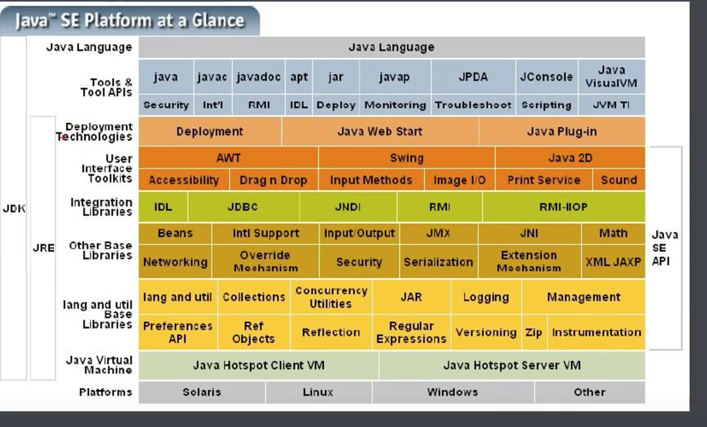
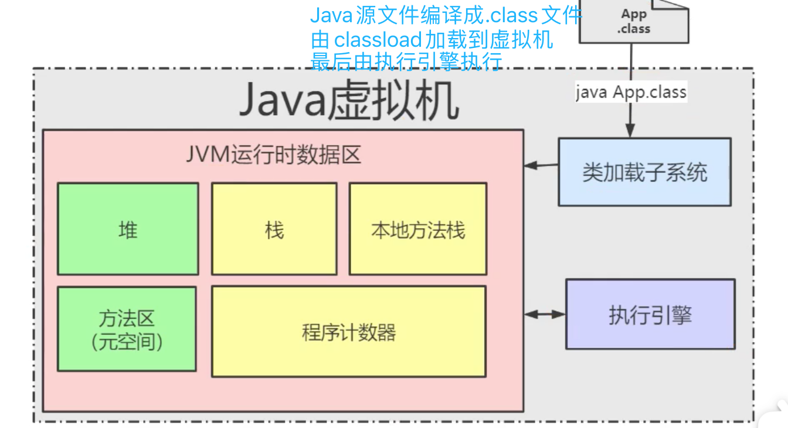
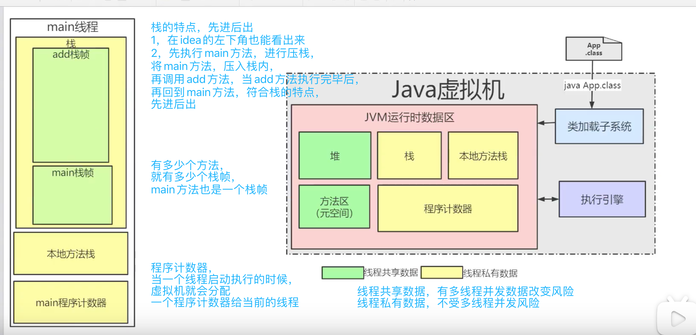
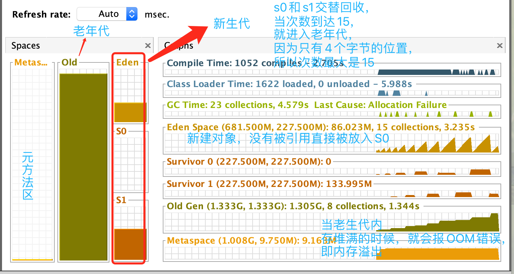

jdk，jre，jvm3者的关联关系内存模型分布
字节码文件的运行流程
一个方法就是一个栈帧，有多少个方法就有多少个栈帧 （main方法也算一个栈帧）栈帧的特点
本地方法栈 是指代码中的方法，被关键词 native 修饰的 方法 如下是 常用方法 Thread.sleep(1000L); // public static native void sleep(long millis) throws InterruptedException 这个意思是这个方法，底层是使用c++实现的，全称为Java Native Interface 缩写为jni 方法区（元空间）存放的是类的模版信息，比如类的属性，对象和类之间的关系，在堆上开辟两个空间，存放两个对象， 但是两个对象都是指向方法区（元空间中的同一个类模版对象）
内存模型

jvm中的的流程
代码如下
public class JvmLearnTuning {
private byte[] bytes = new byte[1024 * 200];
public static void main(String[] args) throws Exception {
List list = new ArrayList<>();
while (true) {
// 每次新建一个对象，就会在内存中开辟一个数组的空间
list.add(new JvmLearnTuning());
// 模拟每10毫秒一个用户登录
Thread.sleep(10L);
}
}
}

GC 的流程是 当一个新的对象诞生的是，存放在Eden 区，